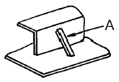
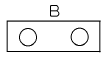
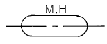

선체건조기능사 (2004-07-18 기출문제)
1과목: 조선공학일반
1. 배의 크기를 나타내는 톤수 중 중량(重量)톤인 것은?
- 총톤수(gross tonnage)
- 배수량(displacement)
- 순톤수(net tonnage)
- 운하톤수(canal tonnage)
(정답률: 알수없음)

2. 선수루, 선교루, 선미루의 3개의 선루를 갖는 선박은?
- 웰갑판선
- 차랑갑판선
- 트렁크(trunk)선
- 삼도형선(三島型船)
(정답률: 알수없음)
3. 고속 항주에 적합하고 수중익을 가지고 있는 선박은?
- 공중 프로펠러선
- 하이드로포일선
- 호버 크라프트선
- 보이드 슈나이더선
(정답률: 알수없음)
4. 심프슨 법칙과 가장 관계가 깊은 것은?
- 배의 중심
- 배의 복원력
- 배의 배수량
- 배의 구획
(정답률: 알수없음)
5. 길이 130 m, 폭 18 m, 길이 10 m, 흘수 5 m, 방형계수(CB) 0.6인 배가 바다물에 떠있다면 배수량은? (단, 해수의 비중은 1.025 이다.)
- 약 7020 톤
- 약 23400 톤
- 약 7200 톤
- 약 14040 톤
(정답률: 알수없음)
6. 가스터빈 기관의 특징 설명으로 잘못된 것은?
- 열효율이 좋지 못하다.
- 여러가지 보조장치가 필요하다.
- 기관 중량이 가볍다.
- 역전장치가 필요없다.
(정답률: 알수없음)
7. 철강 재료에 내식성을 부여하는 대표적인 원소는?
- Mn
- Cr
- Si
- W
(정답률: 알수없음)
8. 강재나 알루미늄 합금 등의 전해부식 방지용 보호판으로 사용되는 재료는?
- 주석(Sn)
- 인(P)
- 납(Pb)
- 아연(Zn)
(정답률: 알수없음)
9. F.R.P 에 대한 설명으로 틀린 것은?
- 불포화 폴리에스테르이다.
- 비중은 강철보다 작다.
- 결합 부분이 없는 구조물을 만들 수 있다.
- 강도는 연강보다 작다.
(정답률: 알수없음)
10. 일반조선용 강재가 가져야 하는 성질은?
- 냉간가공이 가능하고, 선상가열해도 좋은 것
- 냉간가공이 가능하고, 선상가열을 못하는 것
- 극저온(極低溫)에서 파괴되지 않는 것
- 용접할 수 없는 것
(정답률: 알수없음)
11. 앵커(anchor)의 사용 목적이 아닌 것은?
- 좁은수역에서의 선회
- 선박의 항해 중 급정지
- 계선
- 타선박의 예인
(정답률: 알수없음)
12. 앵커 대빗이나 앵커 베드(anchor bed)의 설치가 필요없고 격납이 간단하며 항해 중 묘쇄공에 격납되어 있는 앵커는?
- 스톡 앵커
- 스톡리스 앵커
- 버섯형 앵커
- 시 앵커(sea anchor)
(정답률: 알수없음)
13. 다음 중 일반적으로 가로 메타센타 높이가 가장 큰 선박은?
- 화물선
- 어선
- 범선
- 여객선
(정답률: 알수없음)
14. 선체의 마찰저항을 나타내는 프루드(Froude)의 공식에서 마찰계수에 영향을 미치는 것은?
- 배의 길이
- 배의 나비
- 배의 흘수
- 배의 속도
(정답률: 알수없음)
15. 어떤 선박의 수선면의 중심을 무엇이라고 하는가?
- 중심
- 형심
- 부면심
- 부심
(정답률: 알수없음)
16. 다음 중 선형계수에 해당되지 않는 것은?
- 속도계수
- 주형계수
- 중앙횡단면계수
- 수선면계수
(정답률: 알수없음)
17. 선박의 운동성능에서 선박의 안전 및 승선감에 가장 밀접한 관계가 있는 것은?
- 전후동요
- 상하동요
- 횡요(rolling)
- 종요(pitching)
(정답률: 알수없음)
18. 선박은 일반적으로 선미트림인 경우가 많은데 선미트림의 장점이 아닌 것은?
- 조파저항 감소
- 파랑피해 완화
- 키의 효과 양호
- 공기 저항의 증대
(정답률: 알수없음)
19. 선박의 침수부분의 체적 중심을 무엇이라 하는가?
- 무게중심
- 부력중심
- 메타센터
- 회전중심
(정답률: 알수없음)
20. 선속이 증가하면 일반적으로 가장 급격히 증가하는 저항은?
- 마찰 저항
- 조파 저항
- 조와 저항
- 공기 저항
(정답률: 알수없음)
2과목: 선박건조
21. 산소-아세틸렌 가스 절단이 가장 잘 될 수 있는 재료는?
- 강판
- 알루미늄판
- 동판
- 주철
(정답률: 알수없음)
22. 가공공사를 보통 무슨 공사라고 하는가?
- 외업 공사
- 내업 공사
- 조립 공사
- 선대 공사
(정답률: 알수없음)
23. 선체 곡외판 제작방법으로 가장 적합한 것은?
- 선상가열후 프레스 성형
- 플랜징 머신으로 성형
- 프레스로 1차 성형후 선상가열 성형
- 시어링 머신으로 성형
(정답률: 알수없음)
24. 아래 그림에서 A로 지시된 부품의 명칭은?

- 도그 피스(dog piece)
- 플로팅 스트롱 백(floating strong back)
- 턴 버클 피스(turnbuckle piece)
- 브레이스(brace)
(정답률: 알수없음)
25. 판의 맞대기 용접 시에 사용되지 않는 지그는?
- 쐐기(웨지)
- 꺽임방지 브래킷
- 스트롱 백
- 눈틀림 고치기 피스
(정답률: 알수없음)
26. 다음 블록 중 입체 블록에 속하지 않는 것은?
- 기관실 블록
- 이중저 블록
- 선수미 블록
- 격벽 블록
(정답률: 알수없음)
27. 선박의 세로 진수시 선미부터 진수를 시키는 이유가 아닌 것은?
- 빨리 부력을 얻을 수 있다.
- 타 및 프로펠러를 보호할 수 있다.
- 선수부가 피보팅 하중을 잘 견딜 수 있다.
- 평행상태를 유지하며 진수할 수 있다.
(정답률: 알수없음)
28. 산소-아세틸렌 가스절단기 및 토치를 사용할 때의 주의사항으로서 틀린 것은?
- 팁의 점화는 용접용 라이터를 사용한다.
- 토치에 기름이나 그리이스를 바르지 않는다.
- 팁을 소재할 때에는 반드시 팁 클리이너를 사용한다.
- 토치가 가열되었을 때는 먼저 산소밸브를 잠근 후 물에 식힌다.
(정답률: 알수없음)
29. 조선소의 입지 조건을 잘못 설명한 것은?
- 하천 또는 바다에 접한 넓은 장소를 가져야 한다.
- 기후가 온화하고 강우량이 많아야 한다.
- 조류가 완만하고, 간만의 차가 작아야 한다.
- 주요 항구 또는 항구에 인접한 곳이어야 한다.
(정답률: 알수없음)
30. 선도 작업시 불규칙한 선을 매끈한 곡선으로 수정작업 하는 것을 무엇이라 하는가?
- 페어링
- 리킹
- 템플링
- 랜딩
(정답률: 알수없음)
31. 선박 건조기간의 단축을 위하여 선각 공사기간 중에 의장 공사를 동시에 하는 선행의장의 장점이 아닌 것은?
- 선대 위의 공사 기간이 단축될 수 있다.
- 의장품의 부착이 쉬우며, 공수가 절감될 수 있다.
- 안전하게 작업할 수 있다.
- 공사 장소가 분산되어 관리하기가 쉽다.
(정답률: 알수없음)
32. 탑재할 블록을 크레인으로 옮기거나 들어올릴 때 편리하도록 블록에 임시로 붙이는 것은?
- 아이 플레이트(eye plate)
- 링 볼트(ring bolt)
- 링 플레이트(ring plate)
- 아이 볼트(eye bolt)
(정답률: 알수없음)
33. 플럭스 속에 심선이 공급되면서 모재와 와이어 심선 사이의 아크열에 의해 연속용접이 이행되도록 하는 방법으로, 아크가 플럭스 내부에서 일어나고 실드는 플럭스에 의해 이루어지는 용접은?
- 이산화탄소 아크용접
- 서브머지드 아크용접
- 일렉트로 슬래그용접
- 불활성가스 아크용접
(정답률: 알수없음)
34. 선체 도장작업에 있어서 안전 및 위생관리의 유의사항으로 잘못된 것은?
- 녹떨기 작업 시 방진안경, 방진마스크를 착용한다.
- 통풍이 잘 되지 않는 장소는 송기마스크를 착용한다.
- 도장 시 용제가 휘발하지 않도록 통풍구를 닫는다.
- 산이나 알칼리를 사용하는 작업은 피부에 닿지 않도록 주의한다.
(정답률: 알수없음)
35. 작업장에서 발생하는 우발적인 사고로 인하여 신체적 피해와 경제적 손실을 입는 것을 무엇이라고 하는가?
- 산업 안전
- 산업 재해
- 작업 안전
- 안전과 위생
(정답률: 알수없음)
36. 새깅(sagging)과 호깅(hogging)상태의 응력을 담당하는 부재가 아닌 것은?
- 늑판
- 중심선 거더
- 상갑판
- 용골
(정답률: 알수없음)
37. 선박이 항행중에 굽힘 모멘트(bending moment)를 제일 크게 받는 부분은? (단, L은 선체의 길이)
- 선수 부분
- 선수 또는 선미로 부터 L/4 되는 부분
- 선미 부분
- 선체의 중앙 부분
(정답률: 알수없음)
38. 선박 용어 중 선저구배(rise of floor)란?
- 갑판의 선수미에 있어 상하 방향의 기울기
- 선측의 상부가 하부보다 내측으로 만곡한 것
- 수평면과 선저가 이루는 경사
- 전부흘수와 후부흘수의 차
(정답률: 알수없음)
39. 비수밀 실체늑판(solid floor)에 뚫는 구멍 중 제일 큰 것은?
- 경감 구멍
- 맨홀
- 드레인 홀
- 공기 구멍
(정답률: 알수없음)
40. 보의 치수 결정과 관계없는 것은?
- 보의 간격
- 늑골의 크기
- 갑판 하중의 무게
- 보의 지점간의 거리
(정답률: 알수없음)
3과목: 선박구조 및 조선제도
41. 다음 중 평판 수밀격벽에 관한 설명으로 틀린 것은?
- 선창내 격벽은 건현갑판까지 달한다.
- 구조는 격벽판과 이의 보강재로 구성된다.
- 격벽판은 윗부분에 하중이 크게 작용하므로 윗부분을 두껍게 한다.
- 보강재의 끝단 고착 방법에는 브래킷, 러그(lug)고착, 스닙(snip) 등이 있다.
(정답률: 알수없음)
42. 대형선에서 스톡리스 앵커의 앵커 생크(anchor shank)가 격납되는 곳은?
- 집시 휠(gypsy wheel)
- 선수 쵸크(bow chock)
- 묘쇄공(호즈 파이프, hawse pipe)
- 선수 피크 탱크(forepeak tank)
(정답률: 알수없음)
43. 유조선의 일반적인 구조에 대한 설명 중 잘못된 것은?
- 기관실은 여러가지 이유로 선미에 위치한다.
- 화물유의 하역을 위한 펌프실은 보통 선체의 선수부에 위치한다.
- 선수 격벽의 후방 구획은 일반 화물창으로 하며, 그 아래쪽에 밸러스트 탱크를 설치한다.
- 화물유 탱크의 전후 양끝에는 코퍼댐(cofferdam)을 설치한다.
(정답률: 알수없음)
44. 두 입체가 교차하는 곳에 나타나는 선은?
- 상관선
- 포물선
- 쌍곡선
- 절단선
(정답률: 알수없음)
45. 정투상도법 중 제 3각법에 대한 설명으로 틀린 것은?
- 평면도는 정면도의 위쪽에 도시한다.
- 물체의 뒤쪽에 투상면을 설정한다.
- 좌측면도는 정면도의 좌측에 도시한다.
- 물체를 제 3각 안에 놓고 투상한 것이다.
(정답률: 알수없음)
46. 도면에 치수를 기입하기 위하여 외형선과 평행하게 그은 선의 명칭은?
- 지시선
- 치수 보조선
- 화살표
- 치수선
(정답률: 알수없음)
47. 선체의 각 횡단면의 진형상을 나타내는 도면은?
- 정면도
- 반폭도
- 측면도
- 평면도
(정답률: 알수없음)
48. 선체 선도(線圖)의 순정(順整)을 위한 수정작업은?
- 페어링(fairing)
- 마킹(marking)
- 현도
- 현호
(정답률: 알수없음)
49. 선박의 일반배치도에서 U DK 또는 UPP DK 로 표시된 것은?
- 선수수선
- 선미수선
- 선교루갑판
- 상갑판
(정답률: 알수없음)
50. 선체 선도를 작성하기 위하여 선체를 수면과 평행한 평면으로 절단하여 도시한 것은?
- 수선면
- 종단면
- 횡단면
- 경사면
(정답률: 알수없음)
51. 선박 구조도의 정면 도시에 관한 약속으로 잘못된 것은?
- 선수를 향해 보고 도시한다.
- 각 늑골선에 배치된 부재를 도시한다.
- 양현의 구조가 다를 때는 '좌현만(P-ONLY)' 또는 '우현만(S-ONLY)'이라고 기입한다.
- 도면에 도시되는 면은 선수 쪽 면이다.
(정답률: 알수없음)
52. 이중저 선박(doubel bottom vessel)의 이중저를 나타내는 약자는?
- R.B
- S.C
- F.B
- D.B
(정답률: 알수없음)
53. 선박의 일반배치도에 도시된 다음 약도가 뜻하는 것은?

- 볼라드(bollard)
- 양묘기(windlass)
- 캡스턴(capstan)
- 앵커 대빗(anchor davit)
(정답률: 알수없음)
54. 선박의 일반배치도에 그림과 같이 나타낸 것은?

- 맨홀
- 통풍통
- 천창
- 양화기
(정답률: 알수없음)
55. 타(rudder)를 회전시키는 장치로 타두(rudder head)의 윗부분에 설치되어 있는 것은?
- 틸러
- 러더 포스트
- 러더 핀틀
- 러더 스톡
(정답률: 알수없음)
56. 강재배치도(construction profile & deck plan)에 대한 설명 중 틀린 것은?
- 선체의 주요 강력 부재의 배치, 치수 및 그 변화 상태를 나타낸다.
- 선체 주요치수와 의장수, 닻, 닻줄 등 주요의장 치수가 기입된다.
- 선체의 종단면도, 각 갑판도, 선저 평면도 등으로 구성된다.
- 선체 각부의 상세도를 작성하는 기초 지침이 된다.
(정답률: 알수없음)
57. 디프 탱크의 설비 중에서 탱크 내에 남아 있는 물이나 기름의 양을 측정하기 위하여 관을 설치하는데 이 관의 명칭은?
- 측심관
- 배수관
- 통기관
- 일수관
(정답률: 알수없음)
58. 선미기관선에서 기관실을 보호하고 능파성을 가지게 함과 동시에 조타장치 보호를 주목적으로 설치되는 것은?
- 선미루
- 선수루
- 선교루
- 저선루
(정답률: 알수없음)
59. 선박구조도에 부재를 표시 할 때 굵은실선으로 나타내는 것이 아닌 것은?
- 강판의 절단면
- 강판의 뒷면에 있는 격벽
- 브래킷
- 거더(girder)의 단면
(정답률: 알수없음)
60. 이중저 구조에 설치되는 탱크로서 선박의 트림 조정에 주로 사용되는 것은?
- 연료유 탱크
- 청수 탱크
- 밸러스트 탱크
- 윤활유 탱크
(정답률: 알수없음)